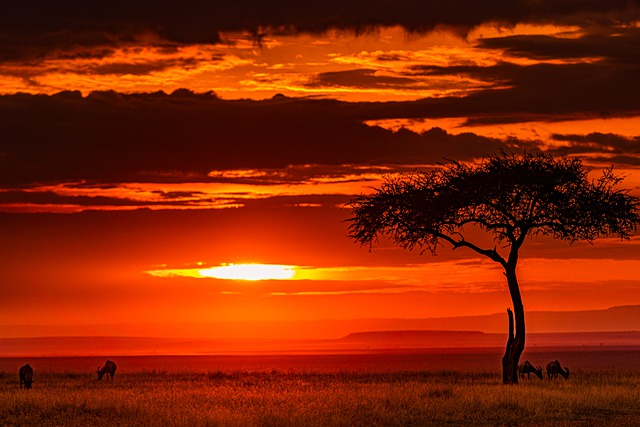

A short drive out of Nairobi’s central business district is the Nairobi National Park. Wide open grass plains and backdrop of the city scrapers, scattered acacia bush play host to a wide variety of wildlife including the endangered black rhino, lions, leopards, cheetahs, hyenas, buffaloes, giraffes and diverse birdlife with over 400 species recorded. Visitors can enjoy the park’s picnic sites, three campsites and the walking trails for hikers.
This period is generally considered the best time to visit Nairobi National Park for wildlife viewing. The dry season offers clear skies and pleasant weather, with cooler temperatures compared to the hotter months. Vegetation is less dense during this time, making it easier to spot wildlife as they gather around water sources. There are fewer mosquitoes and less risk of malaria during the dry season.
Wet Season (November to May):The wet season in Nairobi National Park typically experiences rainfall, which can vary in intensity. The landscape becomes lush and green, offering beautiful scenery and excellent photographic opportunities. Birdwatching enthusiasts may enjoy the wet season as migratory birds arrive in the park. It's worth noting that some roads within the park may become impassable or muddy during heavy rains, potentially limiting accessibility.
Shoulder Seasons (March to May and November):These transitional periods between the dry and wet seasons can offer a unique experience in Nairobi National Park. The park is less crowded during these months, allowing for a more serene and peaceful atmosphere. Wildlife sightings can still be rewarding, and you may have the opportunity to witness the changing seasons and animal behaviors.